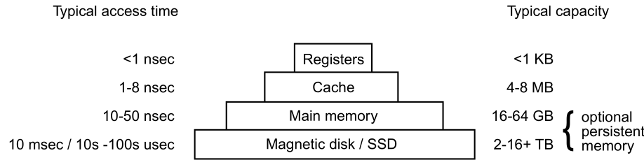
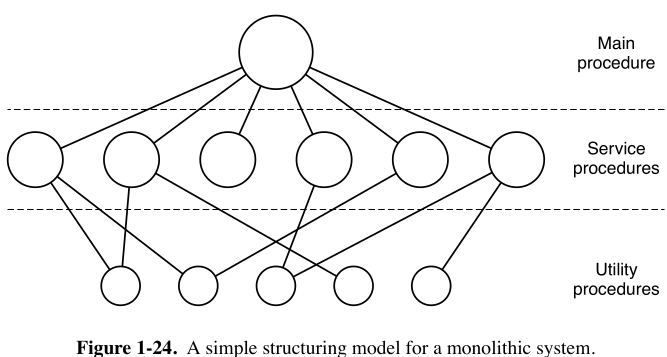
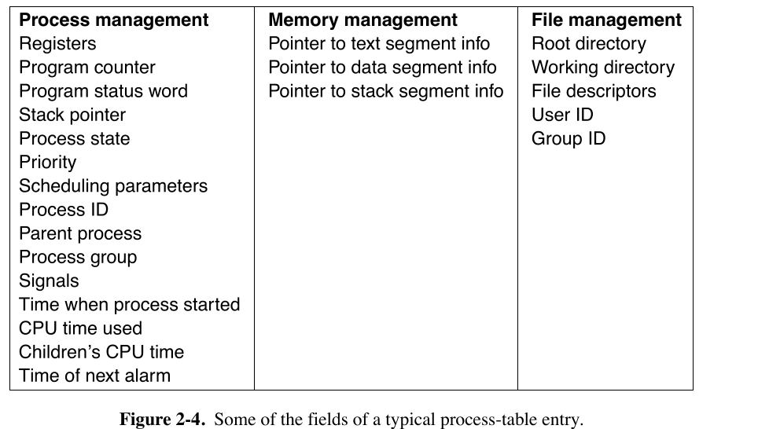
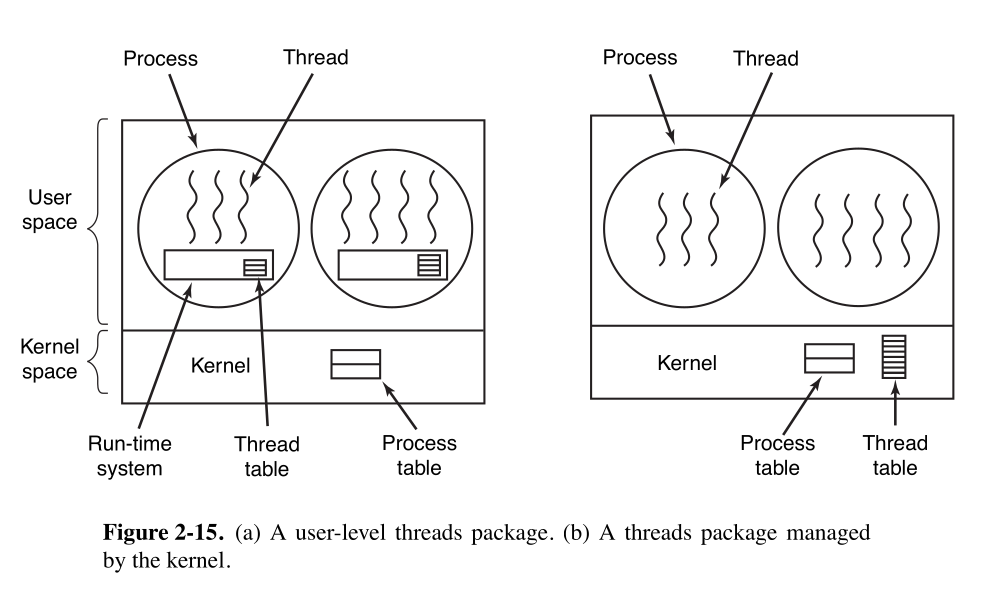

Modern Operating System
Table of Contents
- 1. Introduction
- 2. processes
- 3. Deadlock
- 4. Main Memory
- 5. Virtual Memory
- 6. File Systems
1. Introduction
1.1. What is an OS?
1.1.1. General Overview
- Smartphones and tablets (like the Apple iPad) are just computers in a smaller package with a touch screen. They all have operating systems. Android smartphones and tablets all run Linux as OS on the bare hardware. Android is simply a layer of software running on top of Linux.
- The program that users interact with, usually called shell when it is text based and the GUI(Graphical User Interface) when it uses icons, is actually not part of the operating system, although it uses OS to get its work done.
- Most computers have two modes of operation:
- Kernel mode(supervisor mode)- OS runs in this mode for at least some of its functionality. In this mode, it has complete access to all the hardware and can execute any instruction the machine is capable of executing.
- User mode- The rest of software runs in user mode, in which only a subset of the machine instruction is available. In particular, those instructions that affect control of the machine, determine the security boundaries, or do I/O are forbidden to user-mode programs.
- The user interface program, shell or GUI, is the lowest level of user mode software, and allows the user to start other programs, such as web browser, or music player … These programs make heavy use of the operating system.
- The placement of OS is above hardware. It runs on the bare hardware and provides the base for all the other software.
1.1.2. OS as an Extended Machine
- Operating systems contain many drivers for controlling I/O devices.
- The job of OS is to create good abstractions and then implement and manage the abstract objects thus created.
- One of the major tasks of OS is to hide the (complicated, difficult, awkward…) hardware and present programs with nice, clean, elegant, consistent, abstractions to work with. OS turns the awful in to beautiful.
- OS's real customers are application programs.
1.1.3. OS as Resource Manager
- The concept of an OS as primarily providing abstractions to application programs is a top-down view. An alternative, bottom-up, view holds that the OS is there to manage all the pieces of the complex system.
- In the bottom-up view, the job of the OS is to provide for an orderly and controlled allocation of the processors, memories, and I/O devices among the various programs wanting them.
- Resource management includes multiplexing(sharing) resources in two different ways:
- Time multiplexing- When a resource is time multiplexed, different programs or users take turns using it. First one of them gets to use the resource, then the another, and so on. For example: with only one CPU and multiple programs that want to run on it, the OS first allocates the CPU to one program, then, after it has run long enough, another program gets to use the CPU, then another, and eventually the first one again. Determining who gets next and for how long is the task of OS. Another example of time multiplexing is sharing the printer.
- Space multiplexing- In this resource sharing, each customer gets part of the resource, instead of taking turns. For example, main memory is normally divided up among several running programs, each one can be resident at the same time(for example, in order to take turns using the CPU). Other resources that are space multiplexed are disks and Flash drives.
1.2. History Of OS
1.2.1. 1st Generation(1945-1955): Vacuum Tubes
- OS have historically been closely tied to the architecture of the computers on which they run.
- All programming was done in an absolute machine language, or even worst yet, by wiring up electrical circuits by connecting thousands of cables to plugboards to control the machines basic functions.
- Programming language was unknown(even assembly language was unknown). OS was unheard of.
- The usual mode of operation was for the programmer to sign up for a block of time using the sign up sheet on the wall, then come down to the machine room, insert his/her plugboard into the computer, and spend the next few hours hoping that none of the 2,000 or so vacuum tubes would burn out during the run. Virtually all the problems were simple mathematical and numerical calculations, such as grinding out tables of sines, cosines, and logarithms, or computing artillery trajectories.
- By the early 1950, the routine had improved somewhat with the introduction punched cards. It was now possible to write programs on cards and read them instead of using plugboards.
1.2.2. 2nd Generation(1955-1965): Transistors and Batch Systems
- For the first time, there was a clear separation between designers, builders, operators, programmers, and maintenance personnel.
- To run a job (i.e., a program or set of programs), a programmer would first write the program on paper(in FORTRAN or assembler), then punch it on cards. The programmer would then bring the card deck down to the input room, hand it to one of the operators, and go drink coffee until the output was ready.
- When the computer finished whatever job it was currently running, an operator would go over to the printer and tear off the output and carry it over to the output room, so that the programmer could collect it later. Then the operator would take one of the card decks that had been brought from the input room and read it in. If the FORTRAN compiler was needed, the operator would have to get it from a file cabinet and read it in. Much computer time was wasted while operators were walking around the machine room.
- The solution generally adopted was the batch system. The idea behind it was to collect a tray full of jobs in the input room and then read them onto a magnetic tape using a (inexpensive) small computers like IBM 1401, which was good at reading cards, copying tapes, and printing output, but not quite good at numerical calculations. Other, much more expensive machines, such as IBM 7094, were used for real computing.
- After about an hour of collecting a batch of jobs, the cards were read onto a magnetic tape, which was carried into the machine room.
- Batch operating system group's jobs that perform similar types of functions. These groups are called as batch and are executed at the same time. In early 1950's batch operating system got into action at that time computer was not that developed, they had less processing power and a very minimal memory. So, at that time only one job would get executed at a time. We had to wait until the job gets executed to run the next job. We are saying execution of a job not execution of a program. So what is a job?
- The operating system/computer at that time was not interactive. What do we mean by interactive? Let's see with an ATM. If you go to an ATM, the ATM machine will interact with you by first asking your PIN. After you enter the PIN, it will ask you for amount and other services. Basically it will take information, do the processing, ask you next question or input and do processing on it. But the computers in early stages weren't interactive. They would require everything all at once.
- So as we need to input all information at once it was given input as a job. A job would basically consist of programs, input data, and control instructions. So, how would you give this job as input to the operating system? The input device at that time used was punch card readers and punch cards were storage device. Punch cards were stiff papers which could store digital data represented by presence or absence of holes in predefined positions. Punch cards were punched by hand or machine.
- After preparing the job, users would give it the operator. Operator was a person who would operate the computer. He would collect the jobs from the user. There was no direct interaction of user and operating system or computer. The processing and memory power of the computer back then were not so good. It was tough to execute different types of jobs each time.
- Let's say we have three jobs. Two of them are same(job 1 and job 3) and one(job 2) is different. And you executed in job 1 → job 2 → job 3 sequence. The system would then reload all the resources for job 1, take input, do process and give an output. Then it will take the job 2. As the this job is different it has to deallocate the resources from previous job and allocate the resources for new job and the whole process will work. Then job 3 will be executed, again since it is difference from the previous job, deallocation of resources and allocation of resources for this job will be done.
- Due to less memory and processing power, execution time taken was to much and deallocation and allocation of resources for each new job would take much time. Batch processing was the solution for this problem. The similar kinds of job were combined in batches. Using this technique system would allocate resources for a particular type of jobs which are having similar requirement will execute one by one. This will save time for making system ready for different job each time.
- Then the operator would make collection of jobs having similar requirements in to batches and the batch was given input to the system where once the loading of resources was done. And batch was executed and the output was generated.
1.2.3. 3rd Generation (1965-1980): ICs and Multiprogramming
- By the early 1960s, most computer manufactures had two distinct incompatible product lines. On the one hand, there were the word-oriented, large-scale scientific computers, such as 7094, which were used for industrial-strength numerical calculations in science and engineering. On the other hand, there were the character-oriented, commercial computers such as 1401, which were widely used for tape sorting and printing by banks and insurance companies.
- IBM attempted to solve both these problems at a single stroke by introducing the System/360.
- The IBM 360 was the first major computer line to use IC(Integrated Circuit), thus providing a major price/performance advantage over the second generation machines, which were built up from individual transistors.
- They popularized techniques absent on second generation OS. The most important of these was multiprogramming. On the 7094, when the current job paused to wait for a tape or other I/O operations to complete, the CPU simply sat idle until the I/O finished. With heavily CPU-bound scientific calculations, I/O is infrequent, so this wasted time is not significant. With commercial data processing, the I/O wait time can often be 80% or 90% of the total time, so something has to be done to avoid having the(expensive) CPU be idle so much. The solution that evolved was to partition memory into several pieces, with a different job in each partition. While one job was waiting for I/O to complete, another job could be using the CPU. If enough jobs could be held in main memory at once, the CPU could be kept busy nearly 100% of the time. Having multiple jobs safely in memory at once requires special hardware to protect each job against snooping and mischief by other ones, but the 360 and other third-generation systems were equipped with this hardware.
- Another major feature present in third-generation OS was the ability to read jobs from cards onto the disk as soon they were brought to the computer room. Then, whenever a running job finished, the operating system could load a new job from the disk into the now-empty partition and run it. This ability is called spooling (from Simultaneous peripheral Operation on Line) and was also used for output. With spooling, the 1401s were no longer needed, and much carrying of tapes disappeared.
- Third generation computers were basically batch systems.
- Another major development during the third generation was the phenomenal growth of minicomputers, starting with DEC PDP-1 in 1961. The PDP-1 had only 4K of 18-bit words, but at $120,000 per machine( less than 5% of the price of 7094). It was quickly followed by a series of other PDPs culminating(culminate- reach climactic stage) in the PDP-11.
- One of the computer scientists at Bell Labs who had worked on the MULTICS project, Ken Thompson, subsequently found a small PDP-7 minicomputer that no one was using and set out to write a stripped-down, one-user version of MULTICS. This work later developed into the UNIX operating system.
- Because the source code of UNIX was widely available, various organizations developed their own(incompatible versions), which lead to chaos. Two major versions developed, System V, from AT&T, and BSD(Berkeley Software Distribution) from the university of California at Berkeley. To make it possible to write program that could run on any UNIX system, IEEE developed a standard for UNIX, called POSIX(Portable Operating System Interface), that most versions of UNIX now support. POSIX defines a minimal system-call interface that conformant(conformant- conforming to a particular specification or standard) UNIX system must support.
1.2.4. 4the Generation(1980-present): Personal Computers
- With the development of LSI(Large Scale Integration) circuits – chips containing thousands of transistors on a square centimeter of silicon – the age of personal computer dawned. In terms of architecture, personal computers(initially called minicomputers) were not all that different from minicomputers of the PDP-11 class, but in terms of price they certainly was different.
- An interesting development that began during the mid-1980s was the development of network operating systems and distributed operating systems to manage a collection of computers.
- In a network operating system, the users are aware of the existence of multiple computers and can log in to remote machines and copy files from one machine to another. Each machine runs its own local operating system and has its own local user (or users). Such systems are not fundamentally different from single-processor operating systems. They obviously need a network interface and some low-level software to drive it, as well as programs to achieve remote login and remote file access, but these additions do not change the essential structure of the operating system.
- A distributed OS, in contrast, is one that appears to its users a traditional uniprocessor system, even though it is actually composed of multiple processors. The users should not be aware of where their programs are being run or where their files are located; that should all be handled automatically and efficiently by the operating system.
- True distributed operating systems require more than just adding a little code to a uniprocessor operating system, because distributed and centralized systems differ in certain critical ways. Distributed systems, for example, often allow applications to run on several processors at the same time, thus requiring more complex processor scheduling algorithms in order to optimize the amount of parallelism. Moreover, communication delays within the network often mean that these (and other) algorithms must run with incomplete, outdated, or even incorrect information. This situation differs radically from that in a single-processor system in which the operating system has complete information about the system state.
1.2.5. 5th Generation(1990-present): Mobile Computers
- The first real mobile phone was appeared in 1946 and weighted 40kilos. You could take it wherever you want as long as you had a car in which to carry it.
- The first true handheld phone appeared in the 1970s and, at roughly one kilo gram.
- While the idea of combining telephony and computing in a phone-like device has been around since the 1970s also, the first real smartphone did not appear until the mid-1990s when Nokia released the N9000, which literally combined two, mostly separate devices: a phone and a Personal Digital Assistant.
- After all, most smartphones in the first decade after their inception were running Symbian OS. It was the operating system of choice for popular brands like Samsung, Sony Ericsson, Motorola, and especially Nokia. However, other operating systems like RIM’s Blackberry OS(introduced for smartphone in 2002) and Apple's iOS(released for the first iPhone in 2007) started eating into Symbian's market share. Many expected that RIM would dominate the business market, while iOS would dominate on consumer devices. Symbian’s market share plummeted. In 2011, Nokia ditched Symbian and announced it would focus on Windows Phone as its primary platform.
- But it did not take very long for Android, a Linux-based operating system released by Google in 2008, to overtake all its rivals.
- For phone manufacturers, Android had the advantage that it was open source and available under a permissive license. As a result, they could tinker with it and adapt it to their own hardware with ease. Also, it has a huge community of developers writing apps, mostly in the familiar Java programming language.
1.3. Computer Hardware Review
1.3.1. General view
- An operating system is intimately tied to the hardware of the computer it runs on. It extends the computer's instruction set and manages its resource.
- A simple personal computer can be abstracted to a model having CPU, memory, Video controller, Keyboard controller, USB controller, and Hard disk controller. These devices are connected by a system bus and communicate with one another over it.
1.3.2. Processor
- It fetches instruction from memory and executes them. The basic cycle of every CPU is to fetch the first instruction from memory, decode it to determine its type and operands, executes it and then fetch, decode, and execute subsequent instructions. The cycle is repeated until the program finishes. In this way, programs are carried out.
- Each CPU has a specific set of instructions that it can execute. Thus an x86 processor can not execute ARM programs and an ARM(Advanced RISK Machine) processor can not execute x86 programs.
- Because accessing memory to get an instruction or data word takes much longer than executing an instruction, all CPUs contain registers inside to hold key variables and temporary results.
- Instruction sets often contains instructions to load a word from memory into a register, and store a word from a register into memory. Other instructions combine two operands from registers and/or memory, into a result, such as adding two words and storing the result in a register or memory.
- In addition to the general registers used to hold variables and temporary results, most computers have several special registers that are visible to programmer. One of these is the program counter, which contain the memory address of the next instruction to be fetched. After that instruction has been fetched, the program counter is updated to point to its successor.
- Another register is the stack register, which points to the top of the current stack in memory. The stack contains one frame for each procedure that has been entered but not yet exited. A procedure's stack frame holds those input parameters, local variables, and temporary variables that are not kept in registers.
- Another register is PSW(Program Status Word). This register contains the condition code bits, which are set by comparison instructions, the CPU priority, the mode(user or kernel), and various other control bits. User programs may normally read the entire PSW but typically may write only some of its fields. The PSW plays an important role in system calls and I/O.
- The OS must be fully aware of all the registers. When time multiplexing the CPU, the operating system will often stop the running program to (re)start another one. Every time it stops a running program, the operating system must save all the registers so they can be restored when the program runs later.
- In fact, we distinguish between the architecture and the micro-architecture. The architecture consists of everything that is visible to the software such as the instructions and the registers. The micro-architecture comprises the implementation of the architecture. Here we find data and instruction caches, translation lookaside buffers, branch predictors, the pipelined datapath, and many other elements that should not normally be visible to the operating system or any other software.
- To improve performance, CPU designers have long abandoned the simple model of fetching, decoding, and executing one instruction at a time. Many modern CPUs have facilities for executing more than one instruction at the same time. For example, a CPU might have separate fetch, decode, and execute units, so that while it is executing instruction n, it could also be decoding instruction n + 1 and fetching instruction n + 2. Such an organization is called a pipeline.
- Most CPUs, except very simple ones used in embedded systems, have (at least) two modes, kernel mode, and user mode. Usually, a bit in PSW controls the mode. When running in kernel mode, the CPU can execute every instruction in its instruction set and use every feature of the hardware. On desktop, notebook, and server machines OS runs in kernel mode, giving it access to the complete hardware. On most embedded systems, a small piece runs in kernel mode, with the rest of the OS running in user mode.
- User programs always run in user mode, which permits only a subset of the instructions to be executed and a subset of the features to be accessed. Generally, all instructions involving I/O and memory protection are disallowed in user mode. Setting the PSW mode bit to enter kernel mode is also forbidden, of course.
- To obtain services from the OS, a user program must make a system call, which traps into the kernel and invokes the OS. The trap instruction (e.g., syscall on x86) switches from user mode to kernel mode and starts the operating system.
- Multithreaded and Multicore Chips
- Moore's law states that the number of transistors on a chip doubles every 18 months. Moore's law has held for half a century already and is expected to hold for at least a few years more. After that, the number of atoms per transistor will become too small and quantum mechanics will start to play a big role, preventing further shrinkage of transistor sizes.
- The Intel Pentium 4 introduced a property called multithreading or hyperthreading (Intel's name for it), to the x86 processor, and several other CPU chips also have it– including the SPARC, the power5, and some ARM processors. To a first approximation, what it does is allow the CPU to hold the state of two different threads and then switch back and forth on a nanosecond time scale.(A thread is a light-weight process, which in turn is, a running program). For example, if one of the processes needs to read a word from memory(which takes many clock cycles), a multithreaded CPU can just switch to another thread. Only one process at a time is running, but thread-switching time is reduced to the order of nanoseconds.
- Multithreading has implications for the OS because each thread appears to the OS as a separate CPU.
- Beyond multithreading, many CPU chips now have four, eight, or more complete processors or cores on them.
1.3.3. Memory
- The second major component in any computer is memory. Ideally, memory should be extremely fast(faster than executing an instruction so that the CPU is not held up by memory), abundantly large, and dirty chip. No current technology satisfies all those goals, so a different approach is taken.
- The memory system is constructed as a hierarchy of layers. (see the figure by typing C-c C-x C-v)  The top layers have higher speed, smaller capacity, and greater cost per bit than the lower ones, often by a factor of a billion or more.
- The top layers consists of the registers internal to the CPU. They are made of the same material as the CPU and are as fast as the CPU. Consequently, there is no delay in accessing them. The storage capacity available in them is on the order of 32 x 32 bits on a 32-bit CPU and 64 x 64 bits on 64-bit CPU. Less than 1KB in both cases. Programs must manage the registers(i.e., decide what to keep in them) themselves, in software.
- Next comes the cache memory, which is mostly controlled by the hardware. Main memory is divided up into cache lines, typically 64 bytes, with address 0 to 63 in cache line 0, 64 to 127 in cache line 1, and so on. The most heavily used cache lines are kept in a high-speed cache located inside or very close to CPU. When a programs needs to read a memory word, the cache hardware checks to see if the line needed is in the cache. If it is, called a cache hit, the request is satisfied from the cache and no memory request is sent over the bus to the main memory.
- Cache hits normally takes a few clock cycle. Cache misses have to go to memory, with a substantial time penalty of tens to hundreds of cycles. Cache memory is limited in size due to its high cost. Some machines have two or even three levels of cache, each one slower and bigger than the one before it.
- Caching plays a major role in many areas of computer science, not just caching lines of RAM.
Uses of cache:
- to avoid repeated lookups(like converting long path name into a disk address)
- resolving conversion of web URL to its IP address(not to happen every time)
- In any caching system, several questions come up fairly soon, including:
- When to put a new item into the cache.
- Which cache line to put the new item in.
- Which item to remove from the cache when the slot is needed
- Where to put a newly evicted(evicted – eject) item in the larger memory.
- Caches are such a good idea that modern CPUs have two or more of them. The first level or L1 cache is always inside the CPU and usually feeds decoded instructions into the CPU’s execution engine. Most chips have a second L1 cache for very heavily used data words. The L1 caches are typically 32 KB each. In addition, there is often a second cache, called the L2 cache, that holds several megabytes of recently used memory words. The difference between the L1 and L2 caches lies in the timing. Access to the L1 cache is done without any delay, whereas access to the L2 cache involves a delay of several clock cycles.
- On multicore chips, the designer have to decide where to put the caches. For example, a single L2 cache can be shared by all the cores or each core can have its own L2 cache. Each strategy has its pros and cons. For example, the shared L2 caches requires a more complicated cache controller but the per-core L2 caches makes keeping the caches consistent more difficult.
- Main memory comes next in the hierarchy(the above image). Main memory is usually called RAM.(old-timers some times call it core memory).
- All CPU requests that can not be satisfied out of the cache go to the main memory.
- In addition to main memory, many computers have different kind of nonvolatile random-access memory. Unlike RAM, nonvolatile memory does not lose its contents when the power is switched off. ROM (Read Only Memory) is programmed at the factory and cannot be changed afterward. On some computers, the bootstrap loader used to start the computer is contained in ROM. EEPROM (Electrically Erasable PROM) is also nonvolatile, but in contrast to ROM can be erased and rewritten. However, writing it takes orders of magnitude more time than writing RAM, so it is used in the same way ROM is, except that it is now possible to correct bugs in programs by rewriting them in the field.
- Bootstrapping code may also be stored in Flash memory, which is similarly non volatile, but in contrast to ROM can be erased and rewritten. The bootstrapping code is commonly referred to as BIOS(Basic Input/Output System).
- Flash memory is also commonly used as the storage medium in portable electronic devices such as smartphones and in SSDs to serve as a faster alternative to hard disks. Flash memory is intermediate in speed between RAM and disk. Also, unlike disk memory, if it is erased too many times, it wears out. Firmware inside the device tries to mitigate this through load balancing.
- Yet another kind of memory is CMOS, which is volatile. Many computers use CMOS memory to hold the current time and date. The CMOS memory and the clock circuit that increment the time in it are powered by a small battery, so the time is correctly updated, even when the computer is unplugged. The CMOS memory can also hold the configuration parameters, such as which drive to boot from. CMOS is used because it draws so little power that the original factory-installed battery often lasts for several years. However, when it begins to fail, the computer can appear to be losing its marbles, forgetting things that it has known for years, like how to boot.
- Incidentally, many computers today support a scheme known as virtual memory. It makes it possible to run programs larger than physical memory by placing them on non volatile storage(SSD or disk) and using the main memory as a kind of cache for the most heavily executed parts.
- In multiprogramming switching from one program to another is sometimes called a context switch.
1.3.4. Nonvolatile Storage
- Next in hierarchy are magnetic disks(hard disks), solid state drivers(SSDs), and persistent memory.
- A disk consists of one or more metal platters that rotate at 5400, 7200, 10,800, 15,000 RPM or more.
- Many people refer to SSDs as disks, even though they are physically not disks at all and don't have platters or moving arms. They store data in electronic(Flash) memory. The only way in which they resemble disks is in terms of hardware is that they also store a lot of data which is not lost when the power is off. But from the OS's point of view, they are somewhat like disks.
- The youngest and fastest member of the stable storage family is known as persistent memory. The best known example is Intel Optane which became available in 2016. In many ways, persistent memory can be seen as an additional layer between SSDs(or hard disks) and memory: it's both fast, only slightly slower than regular RAM, and it holds its content across power cycles. While it can be used to implement really fast SSDs, manufacturers may also attach it directly to the memory bus. In fact, it can be used like normal memory to store an application’s data structures, except that the data will still be there when the power goes off.
1.3.5. I/O Devices
- Besides disks there are many other I/O devices that interact heavily with the OS. I/O devices generally consist of two parts: a controller and a device itself. The controller is a chip( or a set of chips) that physically controls the device. It accepts commands from the operating system, for example, to read data from the device, and carries them out. In many cases, the actual control of the device is complicated and detailed, so it is the job of the controller to present a simpler(but still very complex) interface to the operating system.
- The other piece is the actual device itself. Devices have fairly simple interfaces, both because they can not do much and to make them standard. The later is needed so that any SATA disk controller can handle any SATA disk.
- SATA(Serial ATA, ATA stands for Advanced Technology Attachment) is currently the standard type of hard disk on many computers. Since the actual device interface is hidden behind the controller, all that the operating system sees is the interface to the controller, which may be quite different from the interface from the device.
- Because each type of controller is different, different software is needed to control each one. The software that talks to the controller, giving it commands and accepting responses, is called a device driver. Each controller manufacturer has to supply a driver for each OS it supports.
- To be used, the driver has to be put in to the operating system so it can run in kernel mode. Drivers can actually run outside the kernel, and operating systems like Linux and Windows nowadays do offer some support for doing so, but the vast majority of the drivers still run below the kernel boundary.
- There are three ways the driver can be put into the kernel.
- relink the kernel with the new driver and then reboot the system. Many older UNIX systems work this way
- make an entry in an OS file telling it that it needs the driver and then reboot the system. At boot time, the OS goes and finds the driver it needs and loads them. Older versions of Windows works this ways
- Enabling the OS to accept new drivers while running and install them on the fly without the need to reboot. Hot pluggable devices, such as USB and Thunderbolt devices are always need dynamically loaded drivers.
- Every controller has a small number of registers that are used to communicate with it. For example, a minimal disk controller might have registers for specifying the disk address, memory address, sector count, and direction (read or write). To activate the controller, the driver gets a command from the operating system, then translates it into the appropriate values to write into the device registers.
- On some computers, the device registers are mapped into the operating system's address space(the address it can use), so they can be read and written like ordinary memory words. On such computers, no special I/O instructions are required and user programs can be kept away from the hardware by not putting those memory addresses within their reach(e.g., by using base and limit registers)
- On other computers are put in a special I/O port space, which each register having a port address. On these machines, special IN and OUT instructions are available in kernel mode to allow drivers to read and write the registers. The former schema eliminates the need for special I/O instructions but uses up some of the address space. The latter uses no address space but requires special instructions. Both systems are widely uses.
- Input and output can be done in three different ways.
- The simplest method, in which a user program issues a system call, which the kernel then translates into a procedure call to the appropriate driver. The driver then starts the I/O and sits in a tight loop continuously polling the device to see if it is done(usually there is some bit that indicates that the device is still busy). When the I/O has completed, the driver puts the data(if any) where they are needed and returns. The OS then returns control to the caller. This method is called busy waiting and has the disadvantage of tying up the CPU polling the device until it is finished.
- This is for the driver to start the device and ask it to give an interrupt when it is finished. At that point the driver returns. The OS then blocks the caller if need be and looks for other work to do. When the controller detects the end of the transfer, it generates an interrupt to signal completion.
- The third method for doing I/O makes use of special hardware: a DMA(Direct Memory Access) chip that can control the flow of bits between memory and some controller without constant CPU intervention.The CPU sets up the DMA chip, telling it how many bytes to transfer, the device and memory addresses involved, and the direction, and lets it go. When the DMA chip is done, it causes an interrupt, the interrupt gets then handled.
1.3.6. Buses
- A system x86 has many buses(e.g., cache, memory, PCIe, PCI, USB, SATA and DMI), each with different transfer rate and function. The operating system must be aware of all of them for configuration and management.
- The main bus is the PCIe(Peripheral Component Interconnect Express) bus.
- The PCIe was invented by Intel as a successor of the older PCI bus, which in turn was a replacement for the original ISA(Industry Standard Architecture) bus.
- Capable of transferring tens of gigabits per second, PCIe is much faster than its predecessors. It is also very different in nature. Up to its creation in 2004, most buses were parallel and shared. A shared bus architecture means that multiple devices uses the same wires to transfer data. Thus, when multiple devices have data to send, you need an arbiter to determine who can use the bus. A parallel bus architecture as used in traditional PCI means that you send each word of data over multiple wires. For instance, in regular PCI bus, a single 32-bit number is sent over 32 parallel wires. In contrast this, PCIe uses a serial bus architecture and sends all bits in a message through a single connection, known as a lame, much like a network packet.
- The USB(Universal Serial Bus) was invented to attach all the slow I/O devices, such as the keyboard and mouse, to the computer.
- However, calling a modern USB4 device humming along at 40 Gbps ‘‘slow’’ may not come naturally for the generation that grew up with 8-Mbps ISA as the main bus in the first IBM PCs. USB uses a small connector with 4–11 wires (depending on the version), some of which supply electrical power to the USB devices or connect to ground. USB is a centralized bus in which a root device polls all the I/O devices every 1 msec to see if they have any traffic. USB 1.0 could handle an aggregate load of 12 Mbps, USB 2.0 increased the speed to 480 Mbps, USB 3.0 to 5 Gbps, USB 3.2 to 20 Gbps and USB 4 will double that. Any USB device can be connected to a computer and it will function immediately, without requiring a reboot, something pre-USB devices required, much to the consternation of a generation of frustrated users.
1.4. The OS Zoo
1.4.1. Mainframe OS
- The OS for mainframes are heavily oriented toward processing many jobs at once, most of which need prodigious amount of I/O. They typically offer three kinds of services: batch, transaction processing, and timesharing.
- A batch system is one that processes routine jobs without any interactive user present. Claims processing in an insurance company or sales reporting for a chain of stores is typically done in batch mode.
- Transaction-processing systems handle large number of small requests, for example, check processing at a bank or airline reservations. Each unit of work is small, but the system must handle hundreds or thousands per second.
- Timesharing systems allow multiple remote users to run jobs on the computer at once, such as querying a big database. These functions are closely related; mainframe OS often perform all of them. An example mainframe operating system is Z/OS, the successor of OS/390, which in turn was a direct descendant of OS/360. However, mainframe operating systems are gradually being replaced by UNIX variants such as Linux.
1.4.2. Server OS
- One level down are the server OS. They run on servers, which are either very large personal computers, workstations, or even mainframes. They serve multiple users at once over a network and allow the users to share hardware and software resources. Servers can provide print service, file service, database service, or Web service.
- Typical server operating systems are Linux, FreeBSD, Solaris, and the Windows Server family.
1.4.3. Personal Computer OS
- The next category is the personal computer operating system. Modern ones all support multiprogramming, often with dozens of programs started up at boot time, and multiprocessor architecture. Their job is to provide good support to a single user. They are widely used for word processing, spreadsheets, games and Internet access. Common examples are Windows 11, macOS, Linux and FreeBSD.
1.4.4. Smartphone and Handheld Computer OS
- Continuing on down to smaller and smaller systems, we come to tablets(like Apple's iPad), smartphones and other handheld computers. A handheld computer, originally known as a PDA (Personal Digital Assistant), is a small computer that can be held in your hand during operation. Smartphones and tablets are the best known examples. As we have already seen, this market is currently dominated by Google’s Android and Apple’s iOS. Most of these devices boast multicore CPUs, GPS, cameras and other sensors, copious amounts of memory, and sophisticated operating systems. Moreover, all of them have more third-party applications (apps) than you can shake a (USB) stick at. Google has over 3 million Android apps in the Play Store and Apple has over 2 million in the App Store.
1.4.5. The Internet of Things and Embedded OS
- The IOT(Internet of Things) comprises all the billions of physical objects with sensors and actuators that are increasingly connected to the network, such as fridges, thermostats, security camera's motion sensor, and so on. All of these devices contain small computers and most of them run small operating system.
1.4.6. Real-Time OS
- Real-time systems are characterized as having time as a key parameter. For example, in industrial process-control systems, real-time computers have to collect data about the production process and use it to control machines in the factory. Often there are hard deadlines that must be met. For example, if a car is moving down an assembly line, certain actions must take place at certain instants of time. If, for example, a welding robot welds too early or too late, the car will be ruined. If the action absolutely must occur at a certain moment (or within a certain range), we have a hard real-time system. Many of these are found in industrial process control, avionics, military, and similar application areas. These systems must provide absolute guarantees that a certain action will occur by a certain time.
- A soft real-time system is one where missing an occasional deadline, while not desirable, is acceptable and does not cause any permanent damage. Digital audio or multimedia systems fall in this category. Smartphones are also soft real-time systems.
- We should emphasize that the categories of IoT, embedded, real-time and even handheld systems overlap considerably. Many of them have at least some soft real-time aspects. The embedded and real-time systems run only software put in by the system designers; users cannot add their own software, which makes protection easier.
1.4.7. Smart Card OS
- The smallest OS run on smart cards, which are credit-card-sized devices containing a CPU. They have very severe processing power and memory constraints. Some are powered by contacts in the reader into which they are inserted, while contactless smart cards are inductively powered (which greatly limits what they can do.) Some of them can handle only a single function, such as electronic payments, but others can handle multiple functions. Often these are proprietary systems.
- Some smart cards are Java oriented. This means that the ROM on the smart card holds an interpreter for the Java Virtual Machine(JVM). Java applets (small programs) are downloaded to the card and are interpreted by the JVM interpreter. Some of these cards can handle multiple Java applets at the same time, leading to multiprogramming and the need to schedule them. Resource management and protection also become an issue when two or more applets are present at the same time. These issues must be handled by the (usually extremely primitive) operating system present on the card.
- Many embedded systems have no protection hardware and run just a single program. That works because the system designers have total control over all the software.
1.5. OS Concepts
1.5.1. Processes
- A process is basically a program in execution. Associated with each process is its address space, a list of memory locations from 0 to some maximum, which the process can read and write. The address space contains the executable program, the program's data, and its stack. Also associated with each process is a set of resources, commonly including registers(including the program counter and stack pointer), a list of open files, outstanding alarms, lists of related processes, and all the other information needed to run the program. A process is fundamentally a container that holds all the information needed to run a program.
- When a process is suspended temporarily(didn't finish executing), it must later be restarted in exactly the same state it had when it was stopped. This means that all information about the process must be explicitly saved somewhere during the suspension. In many OSs, all the information about each process, other than the contents of its own address space, is stored in an operating system table called the process table, which is an array of structures, one for each process currently in existence. Thus, a (suspended) process consists of its address space, usually called the core image, and its process table entry, which contains the contents of its registers and many other items needed to restart the process later.
- The key process-management system calls are those dealing with the creation and termination of processes. Consider a typical example. A process called the command interpreter or (i.e., shell) reads commands from a terminal. The user has just typed a command requesting that a program be compiled. The shell must now create a new process that will run the compiler. When that process has finished the compilation, it executes a system call to terminate itself.
- Related processes that are cooperating to get some job done often need to communicate with one another and synchronize their activities. This communication is called interprocess communication
- Each person authorized to use a system is assigned a UID(User Identification) by the system administrator. Each process started has the UID of the person who started it. On UNIX, a child process has the same UID as its parent. Users can be members of groups, each of which has a GID(Group Identification).
- One UID, called the superuser or root (in UNIX), or Administrator (in Windows), has a special power and may override many of the protection rules.
1.5.2. Address Space
- More sophisticated OSs allows multiple programs to be in memory at the same time. To keep them from interfering with one another(and with the OS), some kind of protection mechanism is needed. While the hardware must provide this mechanism, it is the operating system that controls it.
- The above viewpoint is concerned with managing and protecting the main memory. A different, but equally important, memory-related issue is managing the address space of the processes. Normally, each process has some set of addresses it can use, typically running from 0 up to some maximum. In the simplest case, the maximum amount of address space a process has is less than the main memory. In this way, a process can fill up its address space and there will be enough room in main memory to hold it all.
- However, on many computers addresses are 32 or 64 bits, giving an address space of 232 or 264 bytes, respectively.
- What happens if a process has more address space than the computer has main memory and the process want to use it all? In the first computers, such a process was just out of luck. Nowadays, a technique called virtual memory exists, in which the OS keeps part of the address space in main memory and part on SSD or disk and shutles pieces back and forth between them as needed.
- In essence, the operating system creates the abstraction of an address space as the set of addresses a process may reference. The address space is decoupled from the machine’s physical memory and may be either larger or smaller than the physical memory. Management of address spaces and physical memory forms an important part of what an operating system does.
1.5.3. Files
- A major function of the OS is to hide the peculiarities of the SSDs, disks, and other I/O devices and present the programmer with a nice, clean abstract model of device independent files. System calls are obviously needed to create files, remove files, read files, and write files. Before a file can be read, it must be located on the storage device and opened, and after being read it should be closed, so calls are provided to do these things.
- To provide a place to keep files, most PC OSs have the concept of directory, sometimes called folder or map, as a way of grouping files together.
1.6. System Calls
1.6.1. What are System Calls
- OS has two main functions: providing abstractions to user programs and managing computer's resource. Resource management is transparent to the users and are done automatically. Thus, the interface between user programs and the OS is primarily about dealing with the abstractions. To really understand what OS do, we must examine this interface closely.
- Since the actual mechanics of issuing a system call are highly machine dependent and often must be expressed in assembly code, a procedure library is provided to make it possible to make system calls from C programs and often from other languages as well.
- If a process is running a user program in user mode and needs a system service, such as reading data from file, it has to execute a trap instruction to transfer control to the operating system. The operating system then figures out what the calling process wants by inspecting the parameter. Then it carries out the system call and returns control to the instruction following the system call.
- The trap instruction is actually fairly similar to the procedure-call instruction in the sense that the instruction following it is taken from distant location and the return address is saved on the stack for use later. Nevertheless, the trap instruction also differs from the procedure-call instruction in two fundamental ways. First, as side effect, it switches into kernel mode. The procedure call instruction does not change the mode. Second, rather than giving a relative or absolute address where the procedure is located, the trap instruction can not jump to an arbitrary address. Depending on the architecture, either it jumps to a single fixed location or there is an 8-bit field in the instruction giving the index into a table in memory containing jump addresses, or equivalent.
- Making a system call is like making a special kind of procedure call – only system calls enter the kernel mode and procedure calls do not.
- Programs should always check the results of a system call to see if an error occurred.
- System calls are performed in a series of steps. To make this concept clearer, let us examine the read system call from UNIX. To make the read system call, the calling program first prepares the parameters, for instance by storing them in a set of registers that by convention are used for parameters. For instance, on x86-64 CPUs, Linux, FreeBSD, Solaris and macOS use the System V AMD64 ABI calling convention, which means that the first six parameters are passed in registers RDI, RSI, RDX, RCX, R8, and R9. If there are more than six arguments, the remainder will be pushed onto the stack.
POSIX has about 100 procedure calls. Some of the most important ones, grouped for convenience in four categories as follow:
Process Management
call Description pid = fork() creates a child process identical to the parent pid=waitpid(pid,&statloc,options) wait for a child to terminate s = execve(nave,argv,environp) Replaces process' core image exit(status) Terminate process execution and return status File Management
call Description fd = open(file, how, …) Open a file for reading, writing or both s = close(fd) close an open file n = read(fd, buffer, nbytes) Read data from a file into a buffer n = write(fd, buffer, nbytes) Write data from a buffer into a file position=lseek(fd, offset, whence) Move the file pointer s = stat(name, &buf) Get a file's status information Directory and File management
call Description s = mkdir(name, mode) Create a new directory s = rmdir(name) Remove an empty directory s = link(name1, name2) Create new entry, name2, pointing to name1 s = unlink(name) Remove a directory entry s = mount(special,name, flag) Mount a file system s = umount(special) Unmount a file system Miscellaneous
call Description s = chdir(dirname) change the working directory s = chmode(name, mode) Change a file's protection bits s = kill(pid, signal) send a signal to a process seconds = time(&seconds) Get the elapsed time since Jan. 1, 1970
1.6.2. System Calls for Process Management
- fork is the only way to create a new process in POSIX. It creates an exact duplicate of the original process, including all the file descriptors, registers, – everything. After the fork, the original process and the copy(parent and child) got their separate ways. All the variables have identical values at the time of the fork, but since the parent’s data are copied to create the child, subsequent changes in one of them do not affect the other one. In fact, the memory of the child may be shared copy-on-write with the parent. This means that parent and child share a single physical copy of the memory until one of the two modifies a value at a location in memory – in which case the OS makes a copy of the small chunk of memory containing that location. Doing so minimizes the amount of memory that needs to be copied a priori, as much can remain shared. Moreover, part of the memory, for instance, the program text does not change at, so it can always be shared between parent and child. The fork call returns a value, which is zero in the child and equals to the child's PID(Process IDentifier) in parent. Using the returned PID, the two processes can see which one is the parent process and which one is the child process.
- In most cases, after fork, the child will need to execute different code from the parent.
1.6.3. System Calls for File Management
- To read or write a file, it must first be opened. This call specifies the filename to be opened, either as an absolute path name or relative to the working directory, as well as the code for opening for reading, writing or both. The file can be closed by close, which makes the file descriptor available for reuse on a subsequent open.
- Associated with each file is a pointer that indicates the current position in the file. When reading(writing) sequentially, it normally points to the next byte to be read(written). The lseek call changes the value of the position pointer, so that subsequent calls to read or write can begin anywhere in the file.
- Lseek has three parameters: the first is the file descriptor for the file, the second is a file position, and the third tells whether the file position is relative to the beginning of the file, the current position, or the end of the file. The value returned by lseek is the absolute position in the file (in bytes) after changing the pointer.
- For each file, UNIX keeps track of the file mode(regular file, special file, directory, and so on), size, time of last modification, and other information. Programs can ask to see this information via the stat system call. The firs
1.6.4. System Calls for Directory Management
- The first two calls, mkdir and rmdir create and remove directories. The next call is link. Its purpose is to allow the same file to appear under two or more names, often in different directories. A typical use is to allow several members of the same programming team to share a common file, with each of them having the file appear in his own directory, possibly under different names. Having a shared file means that changes that any member of the team makes are instantly visible to other members – there is only one file.
- Every file in UNIX has a unique number, its i-number, that identifies it. This i-number is an index into a table of i-nodes, one per file, telling who owns the file, where its disk block are, and so on. A directory is simply a file containing a set of(i-number, ASCII name) pairs.
- The mount call makes it possible to integrate removable media into a single integrated file hierarchy, without having to worry about which device a file is on.
1.7. Operating System Structure
1.7.1. Monolithic Systems
- By far the most common organization, the monolithic approach is to run the entire operating system as a single program in kernel mode. The OS is written as a collection of procedures, linked together into a single large executable binary program.
- When this technique is used, each procedure in the system is free to call any other one, if the later provides some useful computation that the former needs.
- Being able to call any procedure you want is very efficient, but having thousands of procedures that can call each other without restriction may also lead to a system that is unwieldy and difficult to understand. Also, a crash in any of these procedures will take down the entire operating system.
- To construct the actual object program of the OS when this approach is used, one must first compile all the individual procedures and then bind them all together into a single executable file using the system linker.
- In terms of information hiding, there is essentially none – every procedure is to every other procedure.
- Even in monolithic systems, however, it is possible to have some structure. The services (system calls) provided by the operating system are requested by putting the parameters in a well-defined place (e.g., on the stack) and then executing a trap instruction. This instruction switches the machine from user mode to kernel mode and transfer control to the operating system.
- This organization suggests a basic structure for the operating system:
- A main program that invokes the requested service procedure.
- A set of service procedures that carry out the system calls.
- A set of utility procedures that help the service procedures.
- In this model, for each system call there is one service procedure that takes cares of it and executes it. The utility procedures do things that are needed by several service procedures, such as fetching data from user programs. See below figure: 
- In addition to the core operating system that is loaded when the computer is booted, many operating systems support loadable extensions, such as I/O device drivers and file systems. These components are loaded in demand. In UNIX they are called shared libraries. In Windows they are called DLLs(Dynamic Link Libraries). They have file extension .dll
1.7.2. Layered Systems
1.7.3. Microkernels
- The basic idea behind the microkernel design is to achieve high reliability by splitting the operating system up into small, well-defined modules, only one of which –the microkernel– runs in kernel mode and the rest run as relatively powerless ordinary user processes.
- In particular, by running each device driver and file system as a separate user process, a bug in one of these can crash that component, but cannot crash the entire system. Thus, a bug in the audio driver will cause the sound to be garbled or stop, but will not crash the computer. In contrast, in a monolithic system with all the drivers in the kernel, a buggy audio driver can easily reference an invalid memory address and bring the system to a grinding halt instantly.
- Many microkernels have been implemented and deployed for decades.
- With the exception of macOS, which is based on the Mach microkernel, common desktop operating system do not use microkernels. However, they are dominant in real-time, industrial, avionics, and military applications that are mission critical and have very high reliability requirements. A few of the better-known microkernels include Integrity, K42, L4, PikeOS, QNX, Symbian, and MINIX 3.
- MINIX3 has taken the idea of modularity to the limit, breaking most of the operating system up into an number of independent user-mode processes. MINIX 3 is a POSIX conformant, open source OS.
- Intel adopted MINIX 3 for its management engine in virtually all its CPU. OVERVIEW OF MINIX 3
- The MINIX 3 microkernel is only about 15,000 lines of C and some 1,400 lines of assembler for every low-level functions such as catching interrupt and switching process. The C code manages and schedules processes, handles interprocess communication (by passing messages between processes), and offers a set of about 40 kernel calls to allow the rest of the operating system to do its work. These calls perform functions like hooking handlers to interrupts, moving data between address spaces, and installing memory maps for new processes.(see MINIX 3 textbook by the creator for more)
1.7.4. Client-Server Model
- A slight variation of the microkernel idea is to distinguish two classes of processes, the servers, each of which provides some services, and the client, which use these services. The essence is the presence of client processes and server processes.
- Communication between clients and servers is often by message passing. To obtain a service, a client process constructs a message saying what it wants and sends it to the appropriate service. The service then does the work and sends back the answer. If the client and server happen to run on the same machine, certain optimizations are possible, but conceptually, we are still talking about message passing here.
- Since clients communicate with servers by sending messages, the client need not know whether the messages are handled locally on their own machines, or whether they are sent across a network to servers on remote machine. As far as the client is concerned, the same thing happens in both cases: request are sent and replies come back. Thus, the client-server model is an abstraction that can be used for a single machine or a network of machines.
1.7.5. Virtual Machines
- Many companies have traditionally run their mail servers, Web servers, FTP servers, and other servers on separate computers, sometimes with different operating systems. They see virtualization as a way to run them all on the same machine without having a crash of one server bring down the rest
- Virtualization is also popular in the web hosting world.
- Another use of virtualization is for end users who want to be able to run two or more operating systems at the same time.
- Hypervisor, also known as Virtual Machine Monitor(VMM), is a software layer that allows multiple operating systems to run concurrently on a single physical machine. There are two types of hypervisors:
- Type 1 hypervisor: installed directly on the physical hardware. Often used in data centers and enterprise environments for server virtualization due to their performance and efficiency. e.g., VMware, ESXi, Microsoft Hyper-v, and xen
- Type 2 hypervisor: Installed on top of the conventional operating system(host OS). Typically used for personal use, development and testing environment where ease of use and flexibility are prioritized. e.g., VMware Workstation, Oracle VirtualBox
- In order to run virtual machine software on a computer, its CPU must be virtualizable.
- Containers: beside full virtualization, we can also run multiple instances of an operating system on a single machine at the same time by having the operating system itself support different systems, or containers. Containers are provided by the host operating system like Windows or Linux and mostly run just the user mode portion of the operating system. Each container shares the host operating system kernel and typically the binaries and libraries in a read-only fashion. This way, a Linux host can support many Linux containers. Since a container does not contain a full operating system, it can be extremely lightweight.
Of course there are downsides to containers also.
- It is not possible to run a container with a completely different OS from that of the host
- There is no strict resource partitioning.
- Containers are process-level isolated. This means that a container that messes with the stability of the underlying kernel will also affect other containers.
1.7.6. Exokernels and Unikernels
- Rather than cloning the actual machine, as done with virtual machines, another strategy is partitioning it, in other words, giving each other a subset of the resources. Thus, one virtual machine may get disk block 0 to 1023, the next one may get blocks of 1024 to 2047, and so on.
- At the bottom layer, running in kernel mode, is a program called the exokernel. Its job is to allocate resources to virtual machines and then check attempts to use them to make sure no machine is trying to use somebody else's resources. Each user-level virtual machine can run its own Operating system, except that each one is restricted to using only the resources it has asked for and been allocated.
- The advantage of the exokernel schema is that it saves a layer of mapping. In the other design, each virtual machine thinks it has its own disk or SSD, with block running from 0 to some maximum, so the virtual machine monitor must maintain tables to remap disk block addresses(and all other resources). With the exokernel the remapping is not needed. The exokernel need only keep track of which virtual machine has been assigned which resource. This method still has the advantage of separating the multiprogramming (in the exokernel) from the user operating system code (in user space), but with less overhead, since all the exokernel has to do is keep the virtual machines out of each other’s hair.
2. processes
2.1. Process Model
- A process is an activity that has program, input, output, and a state. A single processor may be shared among several processes, with some scheduling algorithm being accustomed to determine when to stop work on one process and service a different one. In contrast, a program is something that may be stored on disk, not doing anything.
- If a program is running twice, it counts as two processes. The fact that two processes happen to be running the same program doesn't matter; they are distinct processes. The operating system may be able to share the code between them so only one copy is in memory, but that is a technical detail that doesn't change the conceptual situation of the two processes running.
- Four principal events causes processes to be created:
- System initialization
- Execution of a process-creation system call by a running process
- A user requests a new process
- Initialization of a batch job
- When an OS is booted, typically numerous processes are created. Some of these processes are foreground processes, that is, processes that interact with (human) users and perform work for them. Others run in the background and are not associated with particular users, but instead have some specific function.
- Processes that stay in the background to handle some activity such as email, Web page, news, printing, and so on are called daemons. Large systems commonly have dozens of them. In UNIX, the ps program can be used to list the running processes.
- Often a running process will issue system calls to create one or more processes to help it do its job.
- In interactive systems, users can start program by typing a command or (double) clicking an icon. Taking either of these actions starts a new process and runs the selected program in it. In command-based UNIX systems running the X Window System, the new process takes over the window in which it was started. In Windows, when a process is started it does not have a window, but it can create one (or more) and most do. In both systems, users may have multiple windows open at once, each running some process.
- Technically a new process is created by having an existing process execute a process creation system call. This system call tells the operating system to create a new process and indicates, directly or indirectly, which program to run in it. The very first process is hard-crafted when the system is booted.
- In UNIX, there is only one system call to create a new process: fork. This call creates an exact clone of the calling process. After the fork, the two processes, the parent and the child, have the same memory image, the same environment Strings, and the same open files. That is all there is. Usually the child process then executes execve or a similar system call to change its memory image and run a new program. For example, when a user types a command, say, sort, to the shell, the shell forks off a child process and the child executes the sort. The reason for this two-step process is to allow the child to manipulate its file descriptors after the fork but before the execve in order to accomplish redirection of standard input, standard output, and standard error.
- In both UNIX and Windows systems, after a process is created, the parent and child have their own distinct address spaces. If either process changes a word in its address space, the change is not visible to the other process. In traditional UNIX, the child’s initial address space is a copy of the parent’s, but there are definitely two distinct address spaces involved; no writable memory is shared. Some UNIX implementations share the program text between the two since that cannot be modified. Alternatively, the child may share all of the parent’s memory, but in that case the memory is shared copy-on-write, which means that whenever either of the two wants to modify part of the memory, that chunk of memory is explicitly copied first to make sure the modification occurs in a private memory area. Again, no writable memory is shared. It is, however, possible for a newly created process to share some of its creator’s other resources, such as open files. In Windows, the parent’s and child’s address spaces are different from the start.
- After a process has been created, it starts running and does whatever its job is. Sooner or later the new process will terminate, usually due to one of the following:
- Normal exit(voluntary)
- Error exit(voluntary)
- Fatal error(involuntary)
- Killed by another process(involuntary)
- Most processes terminate because they have done their work. When a compiler has compiled the program given to it, the compiler executes a system call to tell the operating system that it is finished. This call is exit in UNIX and ExitProcess in Windows. Screen-oriented programs also support voluntary termination. Word processor, Internet browsers, and similar programs always have an icon or menu item that the user can click to tell the process to remove any temporary files it has open and terminate.
- Note that unlike plants and animals that use sexual reproduction, a process has only one parent (but zero, one, two, or more children).
- In UNIX, a process and all of its children and further descendants together form a process group. When a user sends a signal from the keyboard (e.g., by pressing CTRL-C), the signal is delivered to all members of the process group currently associated with the keyboard (usually all active processes that were created in the current window). Individually, each process can catch the signal, ignore the signal, or take the default action, which is to be killed by the signal.
- A special process, called init, is present in the boot image. When it starts running, it reads a file telling how many terminals there are. Then it forks off a new process per terminal(A terminal is a text-based interface that allows users to interact with the computer). These processes wait for someone to log in. If a login is successful, the login process executes a shell(A shell is a command-line interpreter that reads user command and executes them) to accept commands. These commands may start up more processes, and so forth. Thus, all the processes in the whole system belong to a single tree, with init at the root.
- In contrast, Windows has no concept of process hierarchy. All processes are equal. The only hint of a process hierarchy is that when a process is created, the parent is given a special token (called a handle) that it can use to control the child. However, it is free to pass this token to some other process, thus invalidating the hierarchy. Processes in UNIX cannot disinherit their children.
- When a process blocks, it does so because logically it cannot continue, typically because it is waiting for input that is not yet available. It is also possible for a process that is conceptually ready and able to run to be stopped because the operating system has decided to allocate the CPU to another process for a while. These two conditions are completely different. In the first case, the suspension is inherent in the problem (you cannot process the user’s command line until it has been typed). In the second case, it is a technicality of the system (not enough CPUs to give each process its own private processor).
- Three states of a process are:
- Running(actually using the CPU at that instant)
- Ready(runnable; temporarily stopped to let another process run)
- Blocked(unable to run until some external event happens)
- Logically, the first two states are similar. In both cases the process is willing to run, only in the second one, there is temporarily no CPU available for it. The third state is fundamentally different from the first two in that the process can not run, even if the CPU is idle and has nothing else to do.
- Four transitions are possible among these three states.
- Running → Blocked — process blocks for input
- Running → Ready — scheduler picks another process
- Ready → Running — scheduler picks this process
- Blocked → Ready — input becomes available
- Transition 2 and 3 are caused by the process scheduler, a part of OS, without the process even knowing about them. Transition 2 occurs when the scheduler decides that the running process has run long enough, and it is time to let another process have some CPU time. Transition 3 occurs when all the other processes have had their fair share and it is time for the first process to get the CPU to run again. Many algorithms have been devised to try to balance the competing demands of efficiency for the system as a whole and fairness to individual processes.
- Transition 4 occurs when the external event for which a process was waiting (such as the arrival of some input) happens. If no other process is running at that instant, transition 3 will be triggered and the process will start running. Otherwise it may have to wait in ready state for a little while until the CPU is available and its turn comes.
- The lowest level of the operating system is the scheduler, with a variety of processes on top of it. All the interrupt handling and details of actually starting and stopping processes are hidden away in what is here called the scheduler.
- Implementation of Processes
- To implement the process model, the OS maintains a table(an array of structure), called the Process Table or Process Control Block, with one entry per process. This entry contains important information about the process' state, including its program counter, stack pointer, memory allocation, the status of its open files, its accounting and scheduling information, and everything else about the process that must saved when the process is switched from running to ready or blocked state so that it can be restarted later if it have never been stopped. Figure of process table entry: 
- A process may be interrupted thousands of times during its execution, but the key idea is that after each interrupt the interrupted process returns to precisely the same state it was in before the interrupt occurred.
2.2. Threads
2.2.1. What are Threads
- Why a process in side another process?
- In many applications multiple activities are going on at once. By decomposing such an application into multiple sequential threads that run in quasi-parallel, the programming model becomes simpler.
- Mini-processes(threads) are lighter weight than processes, they are easier(i.e., faster) to create and destroy. In many systems creating a thread goes 10→100 times faster than creating a process. When the number of threads needed changes dynamically and rapidly, this property is useful to have.
- Performance. Threads yield no performance gain when all of them are CPU bound, but when there is substantial computing and also substantial I/O, having threads allow these activities to overlap, thus speeding up the application.
- Threads are useful on systems with multiple CPUs, where real parallelism is possible.
- The term multithreading can also be used to describe the situation of allowing multiple threads in the same process. Some CPUs have direct hardware support for multithreading and allow a thread switch to happen on a nanosecond time scale.
- All threads have exactly the same address space, which means that they also share the same global variables. Since every thread can access every memory address within the process’ address space, one thread can read, write, or even wipe out another thread’s stack. There is no protection between threads because:
- It is impossible
- It should not be necessary
- Unlike different processes, which may be from different users and which may be mutually hostile to one another, a process is always owned by a single user, who has presumably created multiple threads so that they can cooperate, not fight with each other. In addition to sharing an address space, all the threads can share the same set of open files, child processes, signals, alarms, and so forth.
- If each thread had its own address space, open files, pending alarms, and so on, it would be a separate process. What we are trying to achieve with the thread concept is the ability for multiple threads of execution to share a set of resources so that they can work together closely to perform some task.
- It is important to realize that each thread has its own stack. Each thread's stack contains one frame for each procedure called but not yet returned from. This frame contains the procedure's local variables and the return address to use when the procedure call has finished. Each thread will generally call different procedures and thus have a different execution history. This is why each thread needs its own stack.
- When multithreading is present, processes usually start with a single thread present. This thread has the ability to create new threads by calling a library procedure such as threadcreate. A parameter to threadcreate specifies the name of the procedure for the new thread to run. It is not necessary(or even possible) to specify anything about the new thread's address space, since it automatically runs in the address space of the creating thread. Often, all threads are equal, on hierarchical relationship.
- With or without hierarchical relationship, the creating thread is usually returned a thread identifier that names then the new thread. When a thread has finished its work, it can exit by calling a library procedure, say threadexit. It then vanishes and is no longer schedulable. In some thread systems, one thread can wait for a (specific) thread to exit by calling a procedure, for example, threadjoin. This procedure blocks the calling thread until a (specified) thread has exited. In this regard, thread creation and termination is very much like process creation and termination.
- Another common thread call is threadyield, which allows a thread to voluntarily give up the CPU to let another thread run. Such a call is important because there is no clock interrupt to actually enforce multiprogramming as there is with processes. Thus, it is important for threads to be polite and voluntarily surrender the CPU from time to time to give other threads a chance to run. Other calls allow one thread to wait for another thread to finish some work, for a thread to announce that it has finished some work, and so on.
- Issues raised by threads:
- Consider the effect of the UNIX fork system call. If the parent process has multiple threads, should the child also have them? If not, the process may not function properly, since all of them may be essential. However, if the child process gets as many threads as the parent, what happens if a thread in the parent was blocked on a read call, say, from the keyboard? Are two threads now blocked on the keyboard, one in the parent and one in the child? When a line is typed, do both threads get a copy of it? Only the parent? Only the child? The same problem exists with open network connections.
- Another class of problems is related to the fact that threads share many data structures. What happens if one thread closes a file while another one is still reading from it? Suppose one thread notices that there is too little memory and starts allocating more memory. Partway through, a thread switch occurs, and the new thread also notices that there is too little memory and also starts allocating more memory. Memory will probably be allocated twice.
2.2.2. POSIX Threads
- To make it possible to write portable threaded programs, IEEE has defined a standard for threads in IEEE standard 1003.1c. The threads package it defines is called Pthreads. Most UNIX systems support it. The standard defines over 60 function calls.
Some Pthread function calls:
Thread Call Description pthreadcreate Create a new thread pthreadexit Terminate the calling thread pthreadjoin Wait for a specific thread to exit pthreadyield Release the CPU to let another thread run pthreadattrinit Create and initialize a thread's attribute structure pthreadattrdestroy Remove a thread's attribute structure - All Pthreads threads have certain properties. Each one has an identifier, a set of registers (including the program counter), and a set of attributes, which are stored in an attribute structure. The attributes include the stack size, scheduling parameters, and other items needed to use the thread.
- A new thread is created using the pthread create call. The thread identifier of the newly created thread is returned as the function value. This call is intentionally very much like the fork system call (except with parameters), with the thread identifier playing the role of the PID, mostly for identifying threads referenced in other calls.
2.2.3. Implementing Threads
- Implementing Threads in User Space
- There are two main places to implement threads: user space and the kernel. The choice is a bit controversial, and a hybrid implementation is also possible.
- User space thread implementation is to put the threads package entirely in user space. The kernel know nothing about them. The kernel is simply managing ordinary, single threaded process.
- One obvious advantage of implementing threads in user space is that user-level threads package can be implemented on an OS that doesn't support threads. With this approach, threads are implemented by a library.
- When threads are managed in user space, each process needs its own private thread table to keep track of the threads in that process. This table is analogous to the kernel’s process table, except that it keeps track only of the per-thread proper- ties, such as each thread’s program counter, stack pointer, registers, state, and so forth. The thread table is managed by the run-time system. When a thread is moved to the ready or blocked state, the information needed to restart it is stored in the thread table, exactly the same way as the kernel stores information about processes in the process table.
- When a thread does something that may cause it to become blocked locally, for example, waiting for another thread in its process to complete some work, it calls a run-time system procedure. This procedure checks to see if the thread must be put into blocked state. If so, it stores the thread’s registers (i.e., its own) in the thread table, looks in the table for a ready thread to run, and reloads the machine registers with the new thread’s saved values. As soon as the stack pointer and program counter have been switched, the new thread comes to life again automatically. If the machine happens to have an instruction to store all the registers and another one to load them all, the entire thread switch can be done in just a handful of instructions. Doing thread switching like this is at least an order of magnitude— maybe more—faster than trapping to the kernel and is a strong argument in favor of user-level threads packages. Figure of user and kernel thread implementation: 
- In addition, when a thread is finished running for the moment, for example, when it calls thread yield, the code of thread yield saves the thread’s information in the thread table and then calls the thread scheduler to pick another thread to run. The procedure that saves the thread’s state and the scheduler are just local procedures, so invoking them is much more efficient than making a kernel call. There is no need for a trap, a context switch, flushing of caches, and so on. This makes thread scheduling very fast.
- User-level threads also have other advantages. They allow each process to have its own customized scheduling algorithm. For some applications, for example, those with a garbage-collector thread, not having to worry about a thread being stopped at an inconvenient moment is a plus.
- Despite their better performance, user-level threads packages have some major problems.
- The problem how blocking system call are implemented. Suppose that a thread reads from the keyboard before any keys have been hit. Letting the thread actually make the system call is unacceptable, since this will stop all the threads. One of the main goals of having threads in the first place was to allow each thread to use blocking calls, but to prevent one blocked thread from affecting the others. With blocking system calls, it is hard to see how this goal can be achieved readily.
- The problem of page faults. Computers can be set up in such a way that not all of the program is in main memory at once. If the program calls or jumps to an instruction that is not in memory, a page fault occurs and the operating system will go and get the missing instruction (and its neighbors) from disk. This is called a page fault. The process is blocked while the necessary is being located and read in. If a thread causes a page fault, the kernel, unaware of even the existence of threads, naturally blocks the entire process until the disk I/O is complete, even though other threads might be runnable.
- Another problem with user-level thread packages is that if a thread starts running, no other thread in that process will ever run unless the first thread voluntarily gives up the CPU. Within a single process, there are no clock interrupts, making it impossible to schedule processes in round-robin fashion (taking turns). Unless a thread exits the run-time system of its own free will, the scheduler will never run.
- One possible solution to the problem of threads running forever is to have the run-time system request a clock signal (interrupt) once a second to give it control, but this, too, is crude and messy to program. Periodic clock interrupts at a higher frequency are not always possible, and even if they are, the total overhead may be substantial. Furthermore, a thread might also need a clock interrupt, interfering with the run-time system’s use of the clock.
- Another, and really the most devastating, argument against user-level threads is that programmers typically want threads precisely in applications where threads block often, as, for example, in a multithreaded Web server. These threads are constantly making system calls. Once a trap has occurred to the kernel to carry out the system call, it is hardly any more work for the kernel to switch threads if the old one has blocked, and having the kernel do this eliminates the need for constantly making select system calls to see if read system calls are safe. For applications that are CPU bound and rarely block, what is the point of having threads at all? No one would seriously propose computing the first n prime numbers or playing chess using threads because there is nothing to be gained by doing it that way.
- Implementing Threads in the Kernel
- The kernel knows and manage the threads. There is no need for a run-time system or thread table in each process. Instead, the kernel has a thread table that keeps track of all the threads in the system. When a thread wants to create a new thread or destroy an existing thread, it makes a kernel call, which then does the creation or destruction by updating the kernel thread table.
- The kernel’s thread table holds each thread’s registers, state, and other information. The information is the same as with user-level threads, but now kept in the kernel instead of in user space (inside the run-time system).
- All calls that might block a thread are implemented as system calls, at considerably greater cost than a call to a run-time system procedure. When a thread blocks, the kernel may choose to run either another thread from the same process (if one is ready) or a thread from a different process. With user-level threads, the run-time system keeps running threads from its own process until the kernel takes the CPU away from it (or there are no ready threads left to run).
- Due to the relatively greater cost of creating and destroying threads in the kernel, some systems take an environmentally correct approach and recycle their threads. When a thread is destroyed, it is marked as not runnable, but its kernel data structures are not otherwise affected. Later, when a new thread must be created, an old thread is reactivated, saving some overhead. Thread recycling is also possible for user-level threads, but since the thread-management overhead is much smaller, there is less incentive to do this.
- Kernel threads do not require any new, nonblocking system calls. In addition, if one thread in a process causes a page fault, the kernel can easily check to see if the process has any other runnable threads, and if so, run one of them while waiting for the required page to be brought in from the disk.
- Their main disadvantage is that the cost of a system call is substantial, so if thread operations (creation, termination, etc.) are common, much more overhead will be incurred.
- While kernel threads solve some problems, they do not solve all problems.
- What happens when a multithreaded process forks. Does the new process have as many threads as the old one did, or does it have just one? In many cases, the best choice depends on what the process is planning to do next. If it is going to call exec to start a new program, probably one thread is the correct choice, but if it continues to execute, reproducing all the threads is probably best.
- Another issue with threads is signals. Remember that signals are sent to processes, not to threads, at least in the classical model. When a signal comes in, which thread should handle it? Possibly threads could register their interest in certain signals, so when a signal came in it would be given to the thread that said it wants it. On Linux, for instance, a signal may be handled by any thread and the lucky winner is selected by the operating system, but we can simply block the signal on all threads except one. If two or more threads register for the same signal, the operating system picks a thread (say, at random) and lets it handle the signal.
- Hybrid Thread Implementation
- One way to combine the advantage of user-level threads and kernel level threads is to use kernel-level threads and then multiplex user-level threads onto some or all of them. When this approach is used, the programmer can determine how many kernel threads to use and how many user-level threads to multiplex on each one. This model gives the ultimate flexibility. With this approach the kernel is aware of only the kernel-level threads and thus schedule those. Some of these threads may have multiple user-level threads multiplexed on top of them. These user-level threads are created, destroyed, and scheduled just like user-level threads in a process that runs on an operating system without multithreading capability. In this model, each kernel-level thread has some set of user-level threads that take turns using it.
2.2.4. Making Single-Threaded Code Multithreaded
- Many existing programs were written for single-threaded processes. Converting these to multithreading is much trickier than it may at first appear. Let's examine a few of pitfalls.
- As a start, the code of a thread normally consists of multiple procedures, just like a process. These may have local variables, global variables, and parameters. Local variables and parameters do not cause any trouble, but variables that are global to a thread but not global to the entire program are a problem. These are variables that are global in the sense that many procedures within the thread use them (as they might use any global variable), but other threads should logically leave them alone.
- As an example, consider the errno variable maintained by UNIX. When a process (or a thread) makes a system call that fails, the error code is put into errno. Suppose two threads thread 1 and thread 2 are running on a system. Thread 1 executes the system call access to find out if it has permission to access a certain file. The operating system returns the answer in the global variable errno. After control has returned to thread 1, but before it has a chance to read errno, the scheduler decides that thread 1 has had enough CPU time for the moment and switches to thread 2. Thread 2 executes an open call that fails, which causes errno to be overwritten and thread 1’s access code to be lost forever. When thread 1 starts up later, it will read the wrong value and behave incorrectly. Various solutions to this problem are possible. One is to prohibit global variables altogether. However worthy this ideal may be, it conflicts with much existing Software. Another is to assign each thread its own private global variables. In this way, each thread has its own private copy of errno and other global variables, so conflicts are avoided. In effect, this decision creates a new scoping level, variables visible to all the procedures of a thread (but not to other threads), in addition to the existing scoping levels of variables visible only to one procedure and variables visible everywhere in the program.
- Accessing the private global variables is a bit tricky, however, since most programming languages have a way of expressing local variables and global variables, but not intermediate forms. It is possible to allocate a chunk of memory for the globals and pass it to each procedure in the thread as an extra parameter. While hardly an elegant solution, it works. Alternatively, new library procedures can be introduced to create, set, and read these threadwide global variables. The first call might look like this: createglobal("bufptr"); It allocates storage for a pointer called bufptr on the heap on in a special storage area and reserved for the calling thread. No matter where the storage is allocated, only the calling thread has access to the global variable. If another thread creates a global variable with the same name, it gets a different storage location that does not conflict with the existing one.
- Two calls are needed to access global variables: one for writing them and the other for reading them. For writing something like setglobal("bufptr", &buf); will do. It stores the value of a pointer in the storage location previously created by the call to createglobal. To read a global variable, the call may look like, bufptr = readglobal("bfptr"); It returns the address stored in the global variable, so its data can be accessed.
- The next problem in turning a single-threaded program into a multithreaded one is that many library procedures are not reentrant.(reentrant — that may be executed more than once at a time either by different threads, or because of recursion). That is, they were not designed to have a second call made to any given procedure while a previous call has not yet finished. For example, sending a message over the network may well be programmed to assemble the message in a fixed buffer within the library, then to trap to the kernel to send it. What happens if one thread has assembled its message in the buffer, then a clock interrupt forces a switch to a second thread that immediately overwrites the buffer with its own message?
- Similarly, memory-allocation procedures such as malloc in UNIX, maintain crucial tables about memory usage, for example, a linked list of available chunks of memory. While malloc is busy updating these lists, they may temporarily be in an inconsistent state, with pointers that point nowhere. If a thread switch happens to occur while the tables are inconsistent and a new call comes in from a different thread, an invalid pointer may be used, leading to a program crash. Fixing all these problems effectively means rewriting the entire library. Doing so is a nontrivial activity with a real possibility of introducing subtle errors.
- A different solution is to provide each procedure with a wrapper that sets a bit to mark the library as being in use. Any attempt for another thread to use a library procedure while a previous call has not yet completed is blocked. Although this approach can be made to work, it greatly eliminates potential parallelism.
- Next, consider signals. Some signals are logically thread specific; others are not. For example, if a thread calls alarm, it makes sense for the resulting signal to go to the thread that made the call. However, when threads are implemented entirely in user space, the kernel does not even know about threads and can hardly direct the signal to the right one. An additional complication occurs if a process may only have one alarm pending at a time and several threads call alarm independently.
- Other signals, such as keyboard interrupt, are not thread specific. Who should catch them? One designated thread? All the threads? Furthermore, what happens if one thread changes the signal handlers without telling other threads about it? And what happens if one thread wants to catch a particular signal (say, the user hitting CTRL-C), and another thread wants this signal to terminate the process? This situation can arise if one or more threads run standard library procedures and others are user-written. Clearly, these wishes are incompatible. In general, signals are difficult enough to manage even in a single-threaded environment. Going to a multithreaded environment does not make them any easier to handle.
- One last problem introduced by threads is stack management. In many systems, when a process’ stack overflows, the kernel just provides that process with more stack automatically. When a process has multiple threads, it must also have multiple stacks. If the kernel is not aware of all these stacks, it cannot grow them automatically upon stack fault. In fact, it may not even realize that a memory fault is related to the growth of some thread’s stack.
- These problems are certainly not insurmountable, but they do show that just introducing threads into an existing system without a fairly substantial system redesign is not going to work at all. The semantics of system calls may have to be redefined and libraries rewritten, at the very least. And all of these things must be done in such a way as to remain backward compatible with existing programs for the limiting case of a process with only one thread.
2.3. Event-Driven Servers
- Suppose that threads are not available or not desirable but the system designers find the performance loss due to single threading, unacceptable. If nonblocking versions of system calls, such as read, are available, a third approach is possible. When a request comes in, the one and only thread examines it. If it can be satisfied from the cache, fine, but if not, a non-blocking disk operation is started.
- The server records the state of the current request in a table and then goes and gets the next event. The next event may either be a request for new work or a reply from the disk about a previous operation. If it is new work, that work is started. If it is a reply from the disk, the relevant information is fetched from the table and the reply processed. With nonblocking disk I/O, a reply probably will have to take the form of a signal or interrupt.
- In this design, the state of the computation must be explicitly saved and restored in the table every time the server switches from working on one request to another. A design like this, in which each computation has a saved state, and there exists some set of events that can occur to change the state, is called a finite-state machine. This concept is widely used throughout computer science.
2.4. Single-Threaded VS Multi-threaded VS Event-Driven Servers
- It is now clear that threads make it possible to retain the idea of sequential processes that make blocking calls(e.g., for disk I/O) and still achieve parallelism. Blocking system calls make programming easier, and parallelism improves performance. The single-threaded server retains the simplicity of blocking system calls but gives up performance.
- Event-driven programming, also achieves high performance through parallelism but uses non-blocking calls and interrupts to do so. It is considered harder to program.
| Model | Characteristics |
|---|---|
| Threads | Parallelism, blocking system calls |
| Single-threaded | No, parallelism, blocking system calls |
| Finite-state Machine/Event- | Parallelism, nonblocking system calls |
| Driven | interrupts |
2.5. Synchronization and Inter process Communication
- There are three issues in inter process communication:
- How one process can pass information to another?
- How to make sure two or more processes or threads don't get into each other's way? For example, two threads in an airline reservation system each trying to grab the last seat on a plane for different customers.
- The third issues concerns with proper sequencing when dependencies are present: if thread A produces data and thread B prints them, B has to wait until A has produced some data before starting to print.
2.5.1. Race Condition
- Situations where two or more processes are reading or writing some shared data and the final result depends on who runs precisely when, are called race conditions.
2.5.2. Critical Regions
- How do we avoid race conditions? The key to preventing trouble here and in many other situations involving shared memory, shared files, and shared everything else is to find some way to prohibit more than one process from reading and writing the shared data at the same time. Put in other words, what we need is mutual exclusion, that is, some way of making sure that if one process is using a shared variable or file, the other processes will be excluded from doing the same thing.
- Part of the program where the shared memory is accessed is called the critical region or critical section. If we could arrange matters such that no two processes were ever in their critical regions at the same time, we could avoid races.
- Although this requirement avoids race conditions, it is not sufficient for having parallel processes cooperate correctly and efficiently using shared data. We need four conditions to hold to have a good solution:
- No two processes may be simultaneously inside their critical region.
- No assumptions may be made about speeds or the number of CPUs.
- No process running outside its critical region may block any process.
- No process should have to wait forever to enter its critical region.
- In a simple way a solution to the critical-section problem must satisfy the following three requirements:
- Mutual Exclusion: If pi is executing in its critical section, then no other processes can be executing in their critical section.
- Progress: If no process is executing in its critical section and some processes wish to enter their critical sections, then only these processes that are not executing in their remainder section can participate in the decision on which will enter its critical section next, and the selection can not be postponed indefinitely.
- Bounded waiting: There exists a bound, or limit, on the number of times that processes are allowed to enter their critical sections after a process has made a request to enter its critical section and before that request is granted.
2.5.3. Mutual Exclusion with Busy Waiting
- Disabling Interrupts
- On a single-processor system, the simplest solution is to have each process disable all interrupts just after entering its critical region and re-enable them just before leaving it. With interrupts disabled, no clock interrupts can occur. The CPU is only switched from process to process as a result of clock interrupt or other interrupts, after all, and with interrupts turned off the CPU will not be switched to another process. Thus, once a process has disabled interrupts, it can examine and update the shared memory without fear that any other process will intervene and make a mess of things.
- This approach is unwise because it gives user processes the power to turn off interrupts. What if one of them did it, and never turned them on again? That could be the end of the system. Furthermore, if the system is a multiprocessor (with two or more CPUs), disabling interrupts affects only the CPU that executed the disable instruction. The other ones will continue running and can access the shared memory.
- On the other hand, it is frequently convenient for the kernel itself to disable interrupts for a few instructions while it is updating variables or especially critical lists. If an interrupt occurs while the list of ready processes, for example, is in an inconsistent state, race conditions could occur. The conclusion is: disabling interrupts is often a useful technique within the operating system itself but is not appropriate as a general mutual exclusion mechanism for user processes. The kernel should not disable interrupts for more than a few instructions lest it miss interrupts.
- The possibility of achieving mutual exclusion by disabling interrupts—even within the kernel—is becoming less every day due to the increasing number of multicore chips even in low-end PCs. Disabling the interrupts of one CPU does not prevent other CPUs from interfering with operations the first CPU is performing.
- Lock Variables
- This attempt is a software solution. Consider having a single, shared (lock) variable, initially 0. When a process wants to enter its critical region, it first tests the lock. If the lock is 0, the process sets it to 1 and enters the critical region. If the lock is already 1, the process just waits until it becomes 0. Thus, a 0 means that no process is in its critical region, and a 1 means that some process is in its critical region.
- Unfortunately this idea has a fatal flaw. Suppose that one process reads the lock and sees that it is 0. Before it can set the lock to 1, another process is scheduled, runs, and sets the lock to 1. When the first process runs again, it will also set the lock to 1, and two processes will be in their critical regions at the same time.
- Now you might think that we could get around this problem by first reading out the lock value, then checking it again just before storing into it, but that really does not help. The race now occurs if the second process modifies the lock just after the first process has finished its second check.
- Strict Alternation
- This is the third approach to mutual exclusion problem.
- In this solution one process may be blocked by a process not in its critical region.
- This solution requires that two processes strictly alternate in entering their critical regions. While this algorithm does avoid all races, it is not really a serious candidate as a solution because it violates condition 3(No process running outside its critical region may block any process).
- Peterson's solution
- By combining the idea of taking turns with the idea of lock variables and warning variables, a Dutch mathematician, T. Dekker, was the first one to devise a software solution to the mutual exclusion problem that does not require strict alternation.
- In 1981, G. L. Peterson discovered a much simpler way to achieve mutual exclusion, thus rendering Dekker’s solution effectively obsolete.
- Before using the shared variables (i.e., before entering its critical region), each process calls enterregion with its own process number, 0 or 1, as parameter. This call will cause it to wait, if need be, until it is safe to enter. After it has finished with the shared variables, the process calls leaveregion to indicate that it is done and to allow the other process to enter, if it so desires.
- Let us see how this solution works. Initially neither process is in its critical region. Now process 0 calls enterregion. It indicates its interest by setting its array element and sets turn to 0. Since process 1 is not interested, enterregion returns immediately. If process 1 now makes a call to enterregion, it will hang there until interested[0] goes to FALSE, an event that happens only when process 0 calls leaveregion to exit the critical region.
- Now consider the case that both processes call enter region almost simultaneously. Both will store their process number in turn. Whichever store is done last is the one that counts; the first one is overwritten and lost. Suppose that process 1 stores last, so turn is 1. When both processes come to the while statement, process 0 executes it zero times and enters its critical region. Process 1 loops and does not enter its critical region until process 0 exits its critical region.
- Peterson's Solution
- A classical software-based solution to the critical-section problem.
- Because of how modern computer architecture are designed, Peterson's solution may not work on modern computer architectures. However, it provides a good algorithmic description of solving critical-section problem and illustrates some of the complexities involved in designing software that addresses the requirement of mutual exclusion, progress, and bounded waiting requirements.
- Peterson's solution is restricted to two processes that alternate execution between their critical section and remainder section. Peterson's solution requires two data items to be shared between the two processes:
- int turn: indicates whose turn it is to enter its critical section
- boolean flag[2]: Used to indicate if a process is ready to enter its critical section
- Peterson Solutions fulfills the 3 requirements of critical section solutions(mutual exclusion, progress, and bounded waiting)
- The TSL Instruction(Test and Set Lock)
- This is a hardware solution to the synchronization problem.
- Some computers, especially those designed with multiple processors in mind, have an instruction like: TSL, RX, LOCK (Test and Set Lock) that works as follow. It reads the contents of the memory word lock into register RX and then stores a nonzero value at the memory address lock. The operations of reading the word and storing into it are guaranteed to be indivisible—no other processor can access the memory word until the instruction is finished. The CPU executing the TSL instruction locks the memory bus to prohibit other CPUs from accessing memory until it is done.
- It is important to note that locking the memory bus is very different from disabling interrupts. Disabling interrupts then performing a read on a memory word followed by a write does not prevent a second processor on the bus from accessing the word between the read and the write. In fact, disabling interrupts on processor 1 has no effect at all on processor 2. The only way to keep processor 2 out of the memory until processor 1 is finished is to lock the bus, which requires a special hardware facility (basically, a bus line asserting that the bus is locked and not available to processors other than the one that locked it).
- To use the TSL instruction, we will use a shared variable, lock, to coordinate access to shared memory. When lock is 0, any process may set it to 1 using the TSL instruction and then read or write the shared memory. When it is done, the process sets lock back to 0 using an ordinary move instruction.
- One solution to the critical-region problem is now easy. Before entering its critical region, a process calls enter region, which does busy waiting until the lock is free; then it acquires the lock and returns. After leaving the critical region the process calls leave region, which stores a 0 in lock. As with all solutions based on critical regions, the processes must call enter region and leave region at the correct times for the method to work. If one process cheats, the mutual exclusion will fail. In other words, critical regions work only if the processes cooperate.
- TSL(Test and Set Lock)
- The main thing in TSL is a shared lock variable which can take either of the two values, 0 or 1. So if the shared lock variable has value 0 it means it is unlocked, and if 1 it means it is locked.
- Before entering into the critical section, a process inquires about the lock. It will see whether the lock value is set to 0 or 1, and that is the testing part.
- If it is locked, it keeps on waiting till it becomes free.
- If it is not locked, it takes the lock and executes the critical section.
- Definition of the TestAndSet() instruction: boolean TestAndSet(boolean *target){ boolean rv = *target; *target = true; return rv; }
- In a Test and Set Lock instruction whatever is happening in a process, i.e, when the process checks for the lock and if the lock is available and when it acquires a lock and set the lock value to 1 and execute its critical section, all these tasks will happen as a single operation which can not be interrupted by anyone. This means atomic operation.(a single operation that won't be interrupted).
- While TSL satisfies mutual execution, it doesn't satisfy bounded-waiting.
2.5.4. Mutual Exclusion Sleep and Wake up
- Both Peterson’s solution and the solutions using TSL or XCHG are correct, but both have the defect of requiring busy waiting. In essence, what these solutions do is this: when a process wants to enter its critical region, it checks to see if the entry is allowed. If it is not, the process just sits in a tight loop burning the CPU while waiting until it is.
- Not only does this approach waste CPU time, but it can also have unexpected effects. Consider a computer with two processes, H, with high priority, and L, with low priority. The scheduling rules are such that H is run whenever it is in ready state. At a certain moment, with L in its critical region, H becomes ready to run(e.g., an I/O operation completes). H now begins busy waiting, but since L is never scheduled while H is running, L never gets the chance to leave its critical region, H loops forever. This situation is sometimes referred to as a variant of the priority inversion problem.
- Now let us look at some interprocess communication primitives that block instead of wasting CPU time when they are not allowed to enter their critical regions. One of the simplest is the pair sleep and wakeup. Sleep is a system call that causes the caller to block, that is, be suspended until another process wakes its up. The wakeup call has one parameter, the process to be awakened. Alternatively, both sleep and wakeup each have one parameter, a memory address used to match up sleeps with wakeups.
- The producer-Consumer Problem
- Also known as bounded-buffer problem.
- Two processes share a common, fixed-size buffer. One of them, the producer, puts information into the buffer, and the other one, the consumer, takes it out. (It is also possible to generalize the problem to have m producers and n consumers, but we will consider only the case of one producer and one consumer because this assumption simplifies the solutions.)
- Trouble arises when the producer wants to put a new item in the buffer, but it is already full. The solution is for the producer to go to sleep, to be awakened when the consumer has removed one or more items. Similarly, if the consumer wants to remove an item from the buffer and sees that the buffer is empty, it goes to sleep until the producer puts something in the buffer and wakes it up.
- This approach can also lead to race conditions.
- To keep track of the number of items in the buffer, we will need a variable, count. If the maximum number of items the buffer can hold is N, the producer’s code will first test to see if count is N. If it is, the producer will go to sleep; if it is not, the producer will add an item and increment count.
- The consumer’s code is similar: first test count to see if it is 0. If it is, go to sleep; if it is nonzero, remove an item and decrement the counter. Each of the processes also tests to see if the other should be awakened, and if so, wakes it up.
- It can occur race condition because access to count is unconstrained. As a consequence, the following situation could possibly occur. The buffer is empty and the consumer has just read count to see if it is 0. At that instant, the scheduler decides to stop running the consumer temporarily and start running the producer. The producer inserts an item in the buffer, increments count, and notices that it is now 1. Reasoning that count was just 0, and thus the consumer must be sleeping, the producer calls wakeup to wake the consumer up.
- Unfortunately, the consumer is not yet logically asleep, so the wakeup signal is lost. When the consumer next runs, it will test the value of count it previously read, find it to be 0, and go to sleep. Sooner or later the producer will fill up the buffer and also go to sleep. Both will sleep forever.
- The essence of the problem here is that a wakeup sent to a process that is not (yet) sleeping is lost. If it were not lost, everything would work. A quick fix is to modify the rules to add a wakeup waiting bit to the picture. When a wakeup is sent to a process that is still awake, this bit is set. Later, when the process tries to go to sleep, if the wakeup waiting bit is on, it will be turned off, but the process will stay awake. The wakeup waiting bit is a piggy bank for storing wakeup signals. The consumer clears the wakeup waiting bit in every iteration of the loop.
2.5.5. Semaphores
- What is Semaphores
- Semaphore proposed by Edsger Dijkstra(in 1965), is a technique to manage concurrent processes by using a simple integer value, which is known as a semaphore.
- Semaphore is simply a variable which is non-negative and shared between threads. This variable is used to solve the critical section problem and to achieve process synchronization in the multiprocessing environment.
A semaphore S is an integer variable that, apart from its initialization, is accessed only through two standard atomic operations: wait() and signal(). Terminology used to denote wait() and signal():
- wait() –> P[From the Dutch word proberen, which means "to test"]
- signal() –> V[From the Dutch word verhogen, which means "to increment"]
Definition of wait(): P(Semaphore S) { while(S <= 0) ; // no operation S–; }
Definition of signal(): V(Semaphore S){ S++; }
- All the modifications to the integer value of the semaphore in the wait() and signal() operations must be executed indivisibly. That is, when one process modifies the semaphore value, no other process can simultaneously modify that same semaphore value.
- Types of semaphores:
- Binary Semaphore: The value of binary semaphore can range only between 0 and 1. On some systems, binary semaphores are known as mutex locks, as they are locks that provide mutual exclusion. If the value is 0, that means that the shared resource is being used by some other process and the currently requesting process has to wait. If in terms of critical section, if S has the value 0, that means that some process is already executing in its critical section and the requesting process has to wait. And if the value of the semaphore is 1, it means that it's free fro the currently requesting process to either enter its critical section or to use the shared resource. Remember that the initial value of S is 1.
- Counting Semaphore: Its value can range over an unrestricted domain. It is used to control access to the resource that has multiple instances.
- Disadvantage of Semaphores:
- It requires busy waiting. Busy waiting means that while a process is in its critical section, any other process that tries to enter its critical section must loop continuously in the entry code. Thus, busy waiting wastes CPU cycles that some other processes might be able to use productively. This type of semaphore is also called a spinlock because the process "spins" while waiting for the lock.
- To overcome the need for busy waiting, we can modify the definition of wait() and signal() semaphore operations. When a process executes wait() operation and finds that the semaphore value is not positive, it must wait. However, rather than engaging in busy waiting, the process can block it self. The block operations places a process into a waiting queue associated with the semaphore, and the state of the process is switched to the waiting state. Then control is transferred to the CPU scheduler, which selects another process to execute.
- Though we can implement semaphore using waiting queue, it is still going to deadlocks and starvation. The implementation of a semaphore with a waiting queue may result in a situation where two or more processes are waiting indefinitely or an event that can be caused only by one of the waiting process. The event in question is the execution of a signal() operation. When such a state is reached, these processes are said to be deadlocked.
- Deadlock: A set of process is deadlocked when every process in the set is waiting for the resource that is currently allocated to another process in the set. We can say there is a deadlock if the following all conditions are TRUE:
- Mutual exclusion
- No preemption
- Hold and wait
- Circular wait
- Producer-Consumer problem
Solution to the Bounded Buffer(Producer-Consumer problem) using semaphores: We will make use of three semaphores:
- m(mutex), a binary semaphore which is used to acquire and release the lock
- empty, a counting semaphore whose initial value is the number of slots in the buffer, since, initially all slots are empty.
- full, a counting semaphore whose initial value is 0.
Definition of Producer: do{ wait(empty); # wait until empty>0 and then decrement 'empty' wait(mutext); # acquire lock
signal(mutex); # release lock signal(full); # increment 'full'
} while(TRUE);
Definition of Consumer: do{ wait(full); # wait until full>0 and then decrement wait(mutex); # acquire lock signal(mutex); # release lock signal(empty); increment 'empty'
}
- Readers And Writer program
- The producers-consumers problem is useful for modeling two processes (or threads) that exchange blocks of data while sharing a buffer. Another famous problem is readers and writers problem, which models access to a database. Imagine, for example, an airline reservation system, with many competing processes wishing to read and write it. It is acceptable to have multiple processes reading the database at the same time, but if one process is updating (writing) the database, no other processes may have access to the database, not even readers. The question is how do you program the readers and the writers?
- In this problem a database is to be shared among several concurrent processes. Some of these processes may want only to read the database, whereas others may want to update(that is, to read and write) the database. We distinguish between these two types of processes by referring the former as readers and the latter as writers. Obviously, if two readers access the shared data simultaneously, no adverse affects will result. However, if a writer and some other thread(either a reader or a writer) access the database simultaneously, chaos may ensue.
Solution to reader-writer problem using semaphore We will use two semaphores and an integer value:
- mutex, a semaphore(initialized to 1) which is used to ensure mutual exclusion when readcount is updated, i.e., when any reader enters or exit from the critical section.
- wrt, a semaphore(initialized to 1) common to reader and writer process.
- readcount, an integer value(initialized to 0) that keeps track of how many processes are currently reading the object.
Code for the writer process do{
wait(wrt);
signal(wrt); } while(true);
Code for the reader process do{ wait(mutex);
readcount++; if(readcount
= 1) wait(wrt); signal(mutex); wait(mutex); readcount--; if(readcount =0) signal(wrt); signal(mutex); } while(true);
- Dining-philosophers Problem